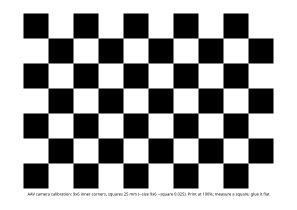

The ribbon cameras have no calibration yet (Q22). Without one there's no undistortion, no
CameraInfo for camera_obstacles, and the stop-sign watcher guesses the lens. This page
is the procedure, ready for the car day. It uses ROS's stock calibrator,
camera_calibration.
The short version
- Print
docs/img/checkerboard-9x6-25mm-a4.svgat 100%, glue it flat. pixi run calibrate-camera front_left --host 192.168.1.108- Move the board until the bars are green; CALIBRATE, then SAVE; close.
- Commit the two files it names. Then
front_rightthe same way.
The picture
camera Pi your Mac (or the Orin with its screen)
───────── ──────────────────────────────────────
MediaMTX ──RTSP H.264──► camera_stream (no detector, no undistortion)
:8554/front_left │ /sensors/camera/front_left/image_raw
▼ (a private ROS domain: this computer only)
camera_calibration's window ◄── you move the board
│ SAVE
▼
ros/sources/aav_camera_stream/config/calibrations/front_left.yaml
config/cameras.yaml: calibration: <that file>What you need
| What | Note |
|---|---|
| The board | 9 x 6 inner corners (10 x 7 squares), 25 mm squares: 250 x 175 mm, A4 or Letter landscape |
| Something flat | foam board or stiff card: a bent board gives a wrong lens |
| The car's network | the camera Pi streaming (pi/README.md) |
| A Mac with this repo | pixi run build done. The tool installs pixi install -e calib (ROS's calibrator, about 1 GB) the first time: do it at home, the car has no internet |
| 15 minutes a camera | two cameras: front_left, front_right |
1. Print the board

| Step | Do |
|---|---|
| 1 | Print docs/img/checkerboard-9x6-25mm-a4.svg at 100% ("actual size"), not "fit to page" |
| 2 | Glue it flat, with no bubbles |
| 3 | Measure 5 squares with a ruler, divide by 5: say 24.8 mm. Use it as --square 0.0248 |
| Bigger | pixi run calibrate-camera board --square 0.035 --paper a3: easier to see from 2-3 m |
2. Run it
pixi run calibrate-camera front_left --host 192.168.1.108 --square 0.025| Option | Default | Note |
|---|---|---|
--host |
192.168.1.108 |
the camera Pi (CAM1-PI) |
--port |
8554 |
MediaMTX's RTSP port |
--square |
0.025 |
m: what you measured |
3. Move the board
The window shows four bars. Each turns green when you have covered enough of it.
| Bar | Means | Do |
|---|---|---|
| X | left to right | the board at the picture's left edge, the middle, the right edge |
| Y | top to bottom | the same, top and bottom |
| Size | near and far | close (it fills the picture) and far (2-3 m) |
| Skew | tilted | tilt it about 30°: left, right, up, down |
- Hold still for a moment at each place: a blurry board isn't used.
- The corners of the picture matter most: the lens bends most there.
- 40 or more samples is good; the terminal prints each one.
4. CALIBRATE, SAVE, close
| Button | What happens |
|---|---|
| CALIBRATE | lights up once the bars are green. It takes up to a minute. The picture then shows straightened lines |
| Check | hold the board in view: lin. (the straightness error) should be under 1 px |
| SAVE | writes /tmp/calibrationdata.tar.gz |
| Close the window | the tool files the result and says so |
| ~~COMMIT~~ | not used: camera_stream has no set_camera_info |
Then commit the two files:
git add ros/sources/aav_camera_stream/config/calibrations/front_left.yaml \
ros/sources/aav_camera_stream/config/cameras.yamlA result saved earlier can be filed by hand:
pixi run calibrate-camera install front_left /tmp/calibrationdata.tar.gz.
5. What it changes
| Who | Then |
|---|---|
camera_stream_front_left (its next start) |
undistorts every picture; publishes /sensors/camera/front_left/camera_info |
stop_sign_watcher |
takes the camera's focal length from it: stops 4.7 m before a sign (perception) |
camera_obstacles |
can put the camera's boxes on the road for Nav2 |
car.launch.py |
stops warning "no calibration" for that camera |
Check it: a real stop sign 4.7 m in front of the camera (tape measure). The watcher's log says each camera's focal length, and it should lock at 4.5-5 m.
The rules
| Rule | Why |
|---|---|
| Calibrate the stream's own picture (1280x720) | the tool refuses a file of another shape: a crop moves the centre |
Fixed focus, as pi/mediamtx.yml sets it |
a lens that refocuses changes its calibration |
| Again after a camera is moved in its mount? | no: the calibration is the lens only. Its position is vehicle.yaml |
| Again after a camera is swapped | yes |
Where things are
| Part | File |
|---|---|
| The tool | tools/calibrate_camera.py (pixi run calibrate-camera) |
| Its logic, no ROS | aav_camera_stream/calibration.py: the board, the command, filing the result (6 tests) |
| ROS's calibrator | the calib environment in pixi.toml (camera_calibration 5.0.13) |
| A fix for it | tools/camera_calibration_cv5.py: below |
Why camera_calibration_cv5.py
camera_calibration 5.0.13 expects OpenCV 4's corner array (N x 1 x 2). RoboStack
builds Jazzy with OpenCV 5, which gives N x 2, and the calibrator stopped at the
first board it saw. The wrapper puts the old shape back, then runs the calibrator's
own main(), unchanged.
Tried without the car (24 Oct)
| Test | Result |
|---|---|
A made-up board, moving, through ffmpeg (OpenH264) and a local MediaMTX, into pixi run calibrate-camera |
the window opened (off screen); 29 samples in 50 s |
| camera_calibration's own offline calibration of 40 made-up views, lens 950 px | it found 948 px |
Its saved file through calibrate-camera install |
filed; cameras.yaml pointed to it; the node's reader loaded it |
| The CALIBRATE and SAVE buttons, a real camera | untested: they need a person and the car |